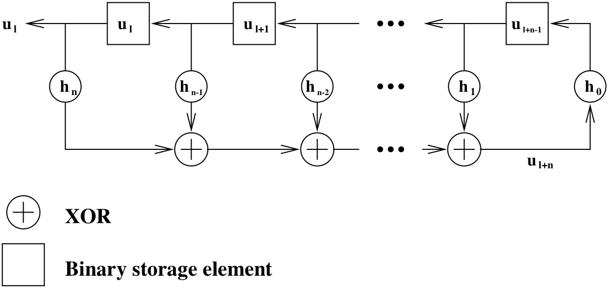
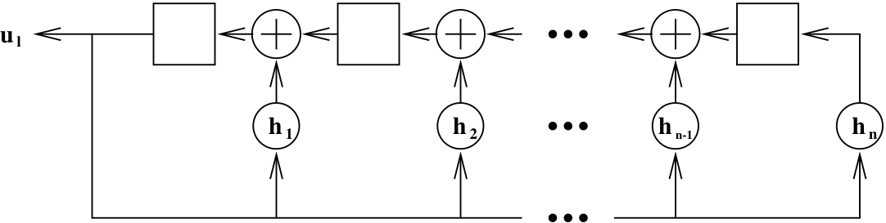
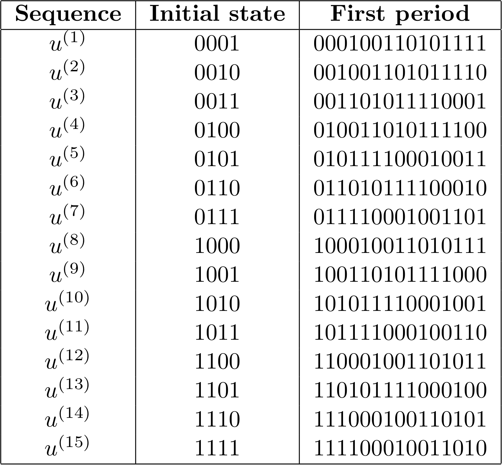
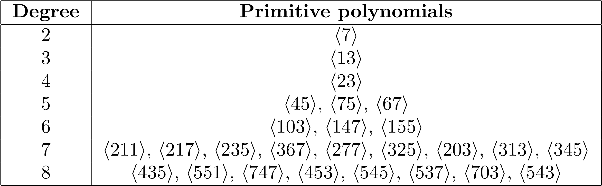

<!DOCTYPE html>


<html >

  <head>
    <meta charset="utf-8" />
    <meta name="viewport" content="width=device-width, initial-scale=1.0" /><meta name="generator" content="Docutils 0.17.1: http://docutils.sourceforge.net/" />

    <title>7.4. Maximal-length Sequences &#8212; Digital Communications with SDRs</title>
  
  
  
  <script data-cfasync="false">
    document.documentElement.dataset.mode = localStorage.getItem("mode") || "";
    document.documentElement.dataset.theme = localStorage.getItem("theme") || "light";
  </script>
  
  <!-- Loaded before other Sphinx assets -->
  <link href="../_static/styles/theme.css?digest=e353d410970836974a52" rel="stylesheet" />
<link href="../_static/styles/bootstrap.css?digest=e353d410970836974a52" rel="stylesheet" />
<link href="../_static/styles/pydata-sphinx-theme.css?digest=e353d410970836974a52" rel="stylesheet" />

  
  <link href="../_static/vendor/fontawesome/6.1.2/css/all.min.css?digest=e353d410970836974a52" rel="stylesheet" />
  <link rel="preload" as="font" type="font/woff2" crossorigin href="../_static/vendor/fontawesome/6.1.2/webfonts/fa-solid-900.woff2" />
<link rel="preload" as="font" type="font/woff2" crossorigin href="../_static/vendor/fontawesome/6.1.2/webfonts/fa-brands-400.woff2" />
<link rel="preload" as="font" type="font/woff2" crossorigin href="../_static/vendor/fontawesome/6.1.2/webfonts/fa-regular-400.woff2" />

    <link rel="stylesheet" type="text/css" href="../_static/pygments.css" />
    <link rel="stylesheet" href="../_static/styles/sphinx-book-theme.css?digest=14f4ca6b54d191a8c7657f6c759bf11a5fb86285" type="text/css" />
    <link rel="stylesheet" type="text/css" href="../_static/togglebutton.css" />
    <link rel="stylesheet" type="text/css" href="../_static/copybutton.css" />
    <link rel="stylesheet" type="text/css" href="../_static/mystnb.4510f1fc1dee50b3e5859aac5469c37c29e427902b24a333a5f9fcb2f0b3ac41.css" />
    <link rel="stylesheet" type="text/css" href="../_static/sphinx-thebe.css" />
    <link rel="stylesheet" type="text/css" href="../_static/design-style.4045f2051d55cab465a707391d5b2007.min.css" />
  
  <!-- Pre-loaded scripts that we'll load fully later -->
  <link rel="preload" as="script" href="../_static/scripts/bootstrap.js?digest=e353d410970836974a52" />
<link rel="preload" as="script" href="../_static/scripts/pydata-sphinx-theme.js?digest=e353d410970836974a52" />

    <script data-url_root="../" id="documentation_options" src="../_static/documentation_options.js"></script>
    <script src="../_static/jquery.js"></script>
    <script src="../_static/underscore.js"></script>
    <script src="../_static/doctools.js"></script>
    <script src="../_static/clipboard.min.js"></script>
    <script src="../_static/copybutton.js"></script>
    <script src="../_static/scripts/sphinx-book-theme.js?digest=5a5c038af52cf7bc1a1ec88eea08e6366ee68824"></script>
    <script>let toggleHintShow = 'Click to show';</script>
    <script>let toggleHintHide = 'Click to hide';</script>
    <script>let toggleOpenOnPrint = 'true';</script>
    <script src="../_static/togglebutton.js"></script>
    <script>var togglebuttonSelector = '.toggle, .admonition.dropdown';</script>
    <script src="../_static/design-tabs.js"></script>
    <script>const THEBE_JS_URL = "https://unpkg.com/thebe@0.8.2/lib/index.js"
const thebe_selector = ".thebe,.cell"
const thebe_selector_input = "pre"
const thebe_selector_output = ".output, .cell_output"
</script>
    <script async="async" src="../_static/sphinx-thebe.js"></script>
    <script>window.MathJax = {"options": {"processHtmlClass": "tex2jax_process|mathjax_process|math|output_area"}}</script>
    <script defer="defer" src="https://cdn.jsdelivr.net/npm/mathjax@3/es5/tex-mml-chtml.js"></script>
    <script>DOCUMENTATION_OPTIONS.pagename = 'ch7/mseq';</script>
    <link rel="shortcut icon" href="../_static/logo.png"/>
    <link rel="index" title="Index" href="../genindex.html" />
    <link rel="search" title="Search" href="../search.html" />
    <link rel="next" title="7.5. Zadoff–Chu Sequences" href="zc.html" />
    <link rel="prev" title="7.3. Signature Signal Design" href="signature.html" />
  <meta name="viewport" content="width=device-width, initial-scale=1"/>
  <meta name="docsearch:language" content="None"/>
  </head>
  
  
  <body data-bs-spy="scroll" data-bs-target=".bd-toc-nav" data-offset="180" data-bs-root-margin="0px 0px -60%" data-default-mode="">

  
  
  <a class="skip-link" href="#main-content">Skip to main content</a>
  
  <input type="checkbox"
          class="sidebar-toggle"
          name="__primary"
          id="__primary"/>
  <label class="overlay overlay-primary" for="__primary"></label>
  
  <input type="checkbox"
          class="sidebar-toggle"
          name="__secondary"
          id="__secondary"/>
  <label class="overlay overlay-secondary" for="__secondary"></label>
  
  <div class="search-button__wrapper">
    <div class="search-button__overlay"></div>
    <div class="search-button__search-container">
<form class="bd-search d-flex align-items-center"
      action="../search.html"
      method="get">
  <i class="fa-solid fa-magnifying-glass"></i>
  <input type="search"
         class="form-control"
         name="q"
         id="search-input"
         placeholder="Search this book..."
         aria-label="Search this book..."
         autocomplete="off"
         autocorrect="off"
         autocapitalize="off"
         spellcheck="false"/>
  <span class="search-button__kbd-shortcut"><kbd class="kbd-shortcut__modifier">Ctrl</kbd>+<kbd>K</kbd></span>
</form></div>
  </div>
  
    <nav class="bd-header navbar navbar-expand-lg bd-navbar">
    </nav>
  
  <div class="bd-container">
    <div class="bd-container__inner bd-page-width">
      
      <div class="bd-sidebar-primary bd-sidebar">
        

  
  <div class="sidebar-header-items sidebar-primary__section">
    
    
    
    
  </div>
  
    <div class="sidebar-primary-items__start sidebar-primary__section">
        <div class="sidebar-primary-item">
  

<a class="navbar-brand logo" href="../intro.html">
  
  
  
  
    
    
      
    
    
    
    <script>document.write(``);</script>
  
  
</a></div>
        <div class="sidebar-primary-item"><nav class="bd-links" id="bd-docs-nav" aria-label="Main">
    <div class="bd-toc-item navbar-nav active">
        
        <ul class="nav bd-sidenav bd-sidenav__home-link">
            <li class="toctree-l1">
                <a class="reference internal" href="../intro.html">
                    Digital Communications with Software Defined Radios
                </a>
            </li>
        </ul>
        <ul class="current nav bd-sidenav">
<li class="toctree-l1"><a class="reference internal" href="../ch1/introduction.html">1. Introduction</a></li>
<li class="toctree-l1 has-children"><a class="reference internal" href="../ch2/prelims.html">2. Some Programming Prelims</a><input class="toctree-checkbox" id="toctree-checkbox-1" name="toctree-checkbox-1" type="checkbox"/><label class="toctree-toggle" for="toctree-checkbox-1"><i class="fa-solid fa-chevron-down"></i></label><ul>
<li class="toctree-l2"><a class="reference internal" href="../ch2/uhd.html">2.1. UHD</a></li>
<li class="toctree-l2"><a class="reference internal" href="../ch2/multithread.html">2.2. Elementary Multi-threading</a></li>
<li class="toctree-l2"><a class="reference internal" href="../ch2/prelims_exs.html">2.3. References and further reading</a></li>

</ul>
</li>
<li class="toctree-l1 has-children"><a class="reference internal" href="../ch3/filter.html">3. Multi-rate Filtering</a><input class="toctree-checkbox" id="toctree-checkbox-2" name="toctree-checkbox-2" type="checkbox"/><label class="toctree-toggle" for="toctree-checkbox-2"><i class="fa-solid fa-chevron-down"></i></label><ul>
<li class="toctree-l2"><a class="reference internal" href="../ch3/fftw3.html">3.1. FFTW3 Library</a></li>
<li class="toctree-l2"><a class="reference internal" href="../ch3/overlapsave.html">3.2. Overlap Save Algorithm</a></li>
<li class="toctree-l2"><a class="reference internal" href="../ch3/multirate.html">3.3. Multi-rate Filtering</a></li>
<li class="toctree-l2"><a class="reference internal" href="../ch3/polyphase.html">3.4. Polyphase Filtering</a></li>
<li class="toctree-l2"><a class="reference internal" href="../ch3/filter_exs.html">3.5. References and further reading</a></li>

</ul>
</li>
<li class="toctree-l1"><a class="reference internal" href="../ch4/part15.html">4. Digest of FCC Regulations Part 15</a></li>
<li class="toctree-l1 has-children"><a class="reference internal" href="../ch5/usrp.html">5. USRP Tuning and Calibration</a><input class="toctree-checkbox" id="toctree-checkbox-3" name="toctree-checkbox-3" type="checkbox"/><label class="toctree-toggle" for="toctree-checkbox-3"><i class="fa-solid fa-chevron-down"></i></label><ul>
<li class="toctree-l2"><a class="reference internal" href="../ch5/tuning.html">5.1. Frequency Tuning</a></li>
<li class="toctree-l2"><a class="reference internal" href="../ch5/iq.html">5.2. DC Offset and IQ Imbalance</a></li>
<li class="toctree-l2"><a class="reference internal" href="../ch5/usrp_refs.html">5.3. References and further reading</a></li>
</ul>
</li>
<li class="toctree-l1 has-children"><a class="reference internal" href="../ch6/signal.html">6. Signal Generation and Capture</a><input class="toctree-checkbox" id="toctree-checkbox-4" name="toctree-checkbox-4" type="checkbox"/><label class="toctree-toggle" for="toctree-checkbox-4"><i class="fa-solid fa-chevron-down"></i></label><ul>
<li class="toctree-l2"><a class="reference internal" href="../ch6/generate.html">6.1. TX Pulse Shaping</a></li>
<li class="toctree-l2"><a class="reference internal" href="../ch6/capture.html">6.2. RX Signal Capture</a></li>
<li class="toctree-l2"><a class="reference internal" href="../ch6/signal_refs.html">6.3. References and further reading</a></li>
</ul>
</li>
<li class="toctree-l1 current active has-children"><a class="reference internal" href="sync.html">7. Signal Acquisition and Synchronization</a><input checked="" class="toctree-checkbox" id="toctree-checkbox-5" name="toctree-checkbox-5" type="checkbox"/><label class="toctree-toggle" for="toctree-checkbox-5"><i class="fa-solid fa-chevron-down"></i></label><ul class="current">
<li class="toctree-l2"><a class="reference internal" href="dll.html">7.1. Closed-Loop Symbol Synchronization</a></li>
<li class="toctree-l2"><a class="reference internal" href="acq.html">7.2. Signal Acquisition</a></li>
<li class="toctree-l2"><a class="reference internal" href="signature.html">7.3. Signature Signal Design</a></li>
<li class="toctree-l2 current active"><a class="current reference internal" href="#">7.4. Maximal-length Sequences</a></li>
<li class="toctree-l2"><a class="reference internal" href="zc.html">7.5. Zadoff–Chu Sequences</a></li>
<li class="toctree-l2"><a class="reference internal" href="sync_refs.html">7.6. References and further reading</a></li>
</ul>
</li>
<li class="toctree-l1 has-children"><a class="reference internal" href="../ch8/noncoh.html">8. Non-coherent Demodulation</a><input class="toctree-checkbox" id="toctree-checkbox-6" name="toctree-checkbox-6" type="checkbox"/><label class="toctree-toggle" for="toctree-checkbox-6"><i class="fa-solid fa-chevron-down"></i></label><ul>
<li class="toctree-l2"><a class="reference internal" href="../ch8/mlnoncoh.html">8.1. Maximum Likelihood Non-coherent Demodulation</a></li>
<li class="toctree-l2"><a class="reference internal" href="../ch8/ask.html">8.2. <span class="math notranslate nohighlight">\(M\)</span>-ary Amplitude Shift Keying (<span class="math notranslate nohighlight">\(M\)</span>-ASK)</a></li>
<li class="toctree-l2"><a class="reference internal" href="../ch8/dpsk.html">8.3. <span class="math notranslate nohighlight">\(M\)</span>-ary Differential Phase Shift Keying (<span class="math notranslate nohighlight">\(M\)</span>-DPSK)</a></li>
<li class="toctree-l2"><a class="reference internal" href="../ch8/noncoh_usrp.html">8.4. USRP Implementation</a></li>

</ul>
</li>
<li class="toctree-l1 has-children"><a class="reference internal" href="../ch9/carrier.html">9. Carrier Synchronization</a><input class="toctree-checkbox" id="toctree-checkbox-7" name="toctree-checkbox-7" type="checkbox"/><label class="toctree-toggle" for="toctree-checkbox-7"><i class="fa-solid fa-chevron-down"></i></label><ul>
<li class="toctree-l2"><a class="reference internal" href="../ch9/mlest.html">9.1. Basic Model</a></li>

<li class="toctree-l2"><a class="reference internal" href="../ch9/dd_pll.html">9.3. Decision-directed Phase-locked Loop</a></li>
<li class="toctree-l2"><a class="reference internal" href="../ch9/ndd_pll.html">9.4. Non-decision-directed Phase-locked Loop</a></li>
<li class="toctree-l2"><a class="reference internal" href="../ch9/carrier_refs.html">9.5. References and further reading</a></li>
</ul>
</li>
<li class="toctree-l1"><a class="reference internal" href="../ch10/coh.html">10. Coherent Demodulation</a></li>
<li class="toctree-l1 has-children"><a class="reference internal" href="../ch11/arq.html">11. Automatic Repeat Request</a><input class="toctree-checkbox" id="toctree-checkbox-8" name="toctree-checkbox-8" type="checkbox"/><label class="toctree-toggle" for="toctree-checkbox-8"><i class="fa-solid fa-chevron-down"></i></label><ul>
<li class="toctree-l2"><a class="reference internal" href="../ch11/crc.html">11.1. Cyclic Redundancy Check Codes</a></li>
<li class="toctree-l2"><a class="reference internal" href="../ch11/protocols.html">11.2. Simple ARQ Protocols</a></li>
<li class="toctree-l2"><a class="reference internal" href="../ch11/duplex.html">11.3. Duplex Transmission using USRPs</a></li>
<li class="toctree-l2"><a class="reference internal" href="../ch11/arq_exs.html">11.4. References and further reading</a></li>

</ul>
</li>
</ul>

    </div>
</nav></div>
    </div>
  
  
  <div class="sidebar-primary-items__end sidebar-primary__section">
  </div>
  
  <div id="rtd-footer-container"></div>


      </div>
      
      <main id="main-content" class="bd-main">
        
        

<div class="sbt-scroll-pixel-helper"></div>

          <div class="bd-content">
            <div class="bd-article-container">
              
              <div class="bd-header-article">
<div class="header-article-items header-article__inner">
  
    <div class="header-article-items__start">
      
        <div class="header-article-item"><label class="sidebar-toggle primary-toggle btn btn-sm" for="__primary" title="Toggle primary sidebar" data-bs-placement="bottom" data-bs-toggle="tooltip">
  <span class="fa-solid fa-bars"></span>
</label></div>
      
    </div>
  
  
    <div class="header-article-items__end">
      
        <div class="header-article-item">

<div class="article-header-buttons">


<div class="dropdown dropdown-source-buttons">
  <button class="btn dropdown-toggle" type="button" data-bs-toggle="dropdown" aria-expanded="false" aria-label="Source repositories">
    <i class="fab fa-github"></i>
  </button>
  <ul class="dropdown-menu">
      
      
      
      <li><a href="https://github.com/tanfwong/sdr_notes" target="_blank"
   class="btn btn-sm btn-source-repository-button dropdown-item"
   title="Source repository"
   data-bs-placement="left" data-bs-toggle="tooltip"
>
  

<span class="btn__icon-container">
  <i class="fab fa-github"></i>
  </span>
<span class="btn__text-container">Repository</span>
</a>
</li>
      
      
      
      
      <li><a href="https://github.com/tanfwong/sdr_notes/issues/new?title=Issue%20on%20page%20%2Fch7/mseq.html&body=Your%20issue%20content%20here." target="_blank"
   class="btn btn-sm btn-source-issues-button dropdown-item"
   title="Open an issue"
   data-bs-placement="left" data-bs-toggle="tooltip"
>
  

<span class="btn__icon-container">
  <i class="fas fa-lightbulb"></i>
  </span>
<span class="btn__text-container">Open issue</span>
</a>
</li>
      
  </ul>
</div>


<div class="dropdown dropdown-download-buttons">
  <button class="btn dropdown-toggle" type="button" data-bs-toggle="dropdown" aria-expanded="false" aria-label="Download this page">
    <i class="fas fa-download"></i>
  </button>
  <ul class="dropdown-menu">
      
      
      
      <li><a href="../_sources/ch7/mseq.md" target="_blank"
   class="btn btn-sm btn-download-source-button dropdown-item"
   title="Download source file"
   data-bs-placement="left" data-bs-toggle="tooltip"
>
  

<span class="btn__icon-container">
  <i class="fas fa-file"></i>
  </span>
<span class="btn__text-container">.md</span>
</a>
</li>
      
      
      
      
      <li>
<button onclick="window.print()"
  class="btn btn-sm btn-download-pdf-button dropdown-item"
  title="Print to PDF"
  data-bs-placement="left" data-bs-toggle="tooltip"
>
  

<span class="btn__icon-container">
  <i class="fas fa-file-pdf"></i>
  </span>
<span class="btn__text-container">.pdf</span>
</button>
</li>
      
  </ul>
</div>


<button onclick="toggleFullScreen()"
  class="btn btn-sm btn-fullscreen-button"
  title="Fullscreen mode"
  data-bs-placement="bottom" data-bs-toggle="tooltip"
>
  

<span class="btn__icon-container">
  <i class="fas fa-expand"></i>
  </span>

</button>


<script>
document.write(`
  <button class="theme-switch-button btn btn-sm btn-outline-primary navbar-btn rounded-circle" title="light/dark" aria-label="light/dark" data-bs-placement="bottom" data-bs-toggle="tooltip">
    <span class="theme-switch" data-mode="light"><i class="fa-solid fa-sun"></i></span>
    <span class="theme-switch" data-mode="dark"><i class="fa-solid fa-moon"></i></span>
    <span class="theme-switch" data-mode="auto"><i class="fa-solid fa-circle-half-stroke"></i></span>
  </button>
`);
</script>

<script>
document.write(`
  <button class="btn btn-sm navbar-btn search-button search-button__button" title="Search" aria-label="Search" data-bs-placement="bottom" data-bs-toggle="tooltip">
    <i class="fa-solid fa-magnifying-glass"></i>
  </button>
`);
</script>
<label class="sidebar-toggle secondary-toggle btn btn-sm" for="__secondary"title="Toggle secondary sidebar" data-bs-placement="bottom" data-bs-toggle="tooltip">
    <span class="fa-solid fa-list"></span>
</label>
</div></div>
      
    </div>
  
</div>
</div>
              
              

<div id="jb-print-docs-body" class="onlyprint">
    <h1>Maximal-length Sequences</h1>
    <!-- Table of contents -->
    <div id="print-main-content">
        <div id="jb-print-toc">
            
            <div>
                <h2> Contents </h2>
            </div>
            <nav aria-label="Page">
                <ul class="visible nav section-nav flex-column">
<li class="toc-h2 nav-item toc-entry"><a class="reference internal nav-link" href="#binary-linear-feedback-shift-register-sequences">7.4.1. Binary linear feedback shift register sequences</a></li>
<li class="toc-h2 nav-item toc-entry"><a class="reference internal nav-link" href="#properties-of-binary-linear-feedback-shift-register-sequences">7.4.2. Properties of binary linear feedback shift register sequences</a></li>
<li class="toc-h2 nav-item toc-entry"><a class="reference internal nav-link" href="#m-sequences">7.4.3. <span class="math notranslate nohighlight">\(m\)</span>-sequences</a></li>
<li class="toc-h2 nav-item toc-entry"><a class="reference internal nav-link" href="#properties-of-m-sequences">7.4.4. Properties of <span class="math notranslate nohighlight">\(m\)</span>-sequences</a></li>
</ul>
            </nav>
        </div>
    </div>
</div>

              
                
<div id="searchbox"></div>
                <article class="bd-article" role="main">
                  
  <section class="tex2jax_ignore mathjax_ignore" id="maximal-length-sequences">
<span id="sec-mseq"></span><h1><span class="section-number">7.4. </span>Maximal-length Sequences<a class="headerlink" href="#maximal-length-sequences" title="Permalink to this headline">#</a></h1>
<ul class="simple">
<li><p>If we are limited to use BPSK symbols from the alphabet <span class="math notranslate nohighlight">\(\{\pm 1\}\)</span>
in our signature sequence, then the maximal-length sequences
(<span class="math notranslate nohighlight">\(m\)</span>-sequences) are common choices with “good” auto-correlation
functions.</p></li>
<li><p>The restriction to BPSK symbols may lead to simpler MF (or
correlator) implementation correlation w.r.t. an <span class="math notranslate nohighlight">\(m\)</span>-sequence can be
calculated by addition and subtraction.</p></li>
</ul>
<section id="binary-linear-feedback-shift-register-sequences">
<h2><span class="section-number">7.4.1. </span>Binary linear feedback shift register sequences<a class="headerlink" href="#binary-linear-feedback-shift-register-sequences" title="Permalink to this headline">#</a></h2>
<ul>
<li><p>Binary sequences are often generated by feedback shift registers in
practice. In particular, linear feedback shift registers, like the
one depicted in the figure below, are commonly used</p>
<a class="reference internal image-reference" href="../_images/blfsr.png"></a>
</li>
<li><p>It is conventional to let the binary sequence <span class="math notranslate nohighlight">\(u=\{u_l\}\)</span> generated
by the <span class="math notranslate nohighlight">\(n\)</span>-stage shift register in the above figures and the tap
weights <span class="math notranslate nohighlight">\(h_0,h_1,\ldots,h_n\)</span> take on values from the alphabet
<span class="math notranslate nohighlight">\(\{0,1\}\)</span>. To obtain the BPSK symbol sequence <span class="math notranslate nohighlight">\(x\)</span> from the binary
sequence <span class="math notranslate nohighlight">\(u\)</span>, we define a map <span class="math notranslate nohighlight">\(\chi\)</span> from the binary alphabet
to the BPSK alphabet by</p>
<div class="amsmath math notranslate nohighlight">
\[\begin{equation*}
  x[l] = \chi (u_l) = (-1)^{u_l},
  \end{equation*}\]</div>
<p>i.e., bit value <span class="math notranslate nohighlight">\(0\)</span> is mapped to BPSK symbol <span class="math notranslate nohighlight">\(+1\)</span> and bit value <span class="math notranslate nohighlight">\(1\)</span>
is mapped to BPSK symbol <span class="math notranslate nohighlight">\(-1\)</span>.</p>
</li>
<li><p>Note that <span class="math notranslate nohighlight">\(h_0\)</span> has to be <span class="math notranslate nohighlight">\(1\)</span>, otherwise the output sequence <span class="math notranslate nohighlight">\(u\)</span>
will be identically zero after <span class="math notranslate nohighlight">\(n\)</span> shifts. Similarly, <span class="math notranslate nohighlight">\(h_n\)</span> has to
be <span class="math notranslate nohighlight">\(1\)</span>, otherwise we can simply remove the leftmost stage to get a
shorter shift register without affecting the output sequence.</p></li>
<li><p>Alternatively, one can also use the following form of linear
feedback shift register that is more amenable to high-speed digital
logic implementation:</p>
<a class="reference internal image-reference" href="../_images/fastlfsr.png"></a>
</li>
<li><p>From the figures, we see that the shift-register output sequence satisfies</p>
<div class="math notranslate nohighlight" id="equation-e-3-18">
<span class="eqno">(7.11)<a class="headerlink" href="#equation-e-3-18" title="Permalink to this equation">#</a></span>\[\begin{equation}
u_{l+n} = h_n u_l \oplus h_{n-1} u_{l+1} \oplus \ldots \oplus h_1 u_{l+n-1},
\end{equation}\]</div>
<p>where <span class="math notranslate nohighlight">\(\oplus\)</span> denotes addition modulo <span class="math notranslate nohighlight">\(2\)</span>, i.e., the XOR operation.</p>
</li>
<li><p>The shift register tap weights <span class="math notranslate nohighlight">\(h_0,h_1,\ldots,h_n\)</span> are usually
represented by the binary polynomial</p>
<div class="amsmath math notranslate nohighlight">
\[\begin{equation*} 
  h(D)=h_0 D^n+h_1 D^{n-1} + \ldots + h_{n-1}D + h_n. 
  \end{equation*}\]</div>
<p>The coefficients of <span class="math notranslate nohighlight">\(h(D)\)</span> are often given in octal notation. For
example, the polynomial <span class="math notranslate nohighlight">\(D^4+D+1\)</span> is represented by
<span class="math notranslate nohighlight">\(\langle23\rangle\)</span> in octal notation.</p>
</li>
<li><p>Note that each binary <span class="math notranslate nohighlight">\(h(D)\)</span> corresponds to a binary linear feedback
shift register which generates binary sequences. Conversely, we say
that a binary sequence <span class="math notranslate nohighlight">\(u\)</span> is generated by <span class="math notranslate nohighlight">\(h(D)\)</span> if the sequence
elements satisfy <a class="reference internal" href="#equation-e-3-18">(7.11)</a>.</p></li>
<li><p>A shift register <span class="math notranslate nohighlight">\(h(D)\)</span> can generate different sequences depending
on the initial contents of the storage elements. When all the
storage elements contain <span class="math notranslate nohighlight">\(0\)</span> initially, the sequences generated is
the all-zero sequence. Since the all-zero sequence is of no
practical interest, we usually exclude it from the set of sequences
generated by <span class="math notranslate nohighlight">\(h(D)\)</span>. An <span class="math notranslate nohighlight">\(n\)</span>-stage shift register can be viewed as a
state machine with <span class="math notranslate nohighlight">\(2^n-1\)</span> states (the all-zero state is excluded)
indexed by the contents of the storage elements. The initial state
of the equivalent state machine determines the sequence generated by
the shift register. For example, the table below shows all the
<span class="math notranslate nohighlight">\(2^4 - 1 = 15\)</span> possible non-zero sequences generated by the
polynomial <span class="math notranslate nohighlight">\(D^4+D+1\)</span>:</p>
<a class="reference internal image-reference" href="../_images/mseq23.png"></a>
</li>
</ul>
</section>
<section id="properties-of-binary-linear-feedback-shift-register-sequences">
<h2><span class="section-number">7.4.2. </span>Properties of binary linear feedback shift register sequences<a class="headerlink" href="#properties-of-binary-linear-feedback-shift-register-sequences" title="Permalink to this headline">#</a></h2>
<ul class="simple">
<li><p>Binary shift register sequences have been extensively investigated.
Here, we state several obvious but important properties of binary
shift register sequences. Below, we use <span class="math notranslate nohighlight">\(u\)</span> and <span class="math notranslate nohighlight">\(v\)</span> to denote binary
shift register sequences:</p>
<ol class="arabic simple">
<li><p>Each binary shift register sequence <span class="math notranslate nohighlight">\(u\)</span> is periodic. The period
of <span class="math notranslate nohighlight">\(u\)</span> is at most <span class="math notranslate nohighlight">\(2^n -1\)</span>, where <span class="math notranslate nohighlight">\(n\)</span> is the degree of the
polynomial that generates <span class="math notranslate nohighlight">\(u\)</span>.</p></li>
<li><p>If <span class="math notranslate nohighlight">\(u\)</span> is generated by <span class="math notranslate nohighlight">\(h(D)\)</span>, then <span class="math notranslate nohighlight">\(T^i u\)</span> is a sequence
generated by <span class="math notranslate nohighlight">\(h(D)\)</span>.</p></li>
<li><p>If <span class="math notranslate nohighlight">\(u\)</span> and <span class="math notranslate nohighlight">\(v\)</span> are generated by <span class="math notranslate nohighlight">\(h(D)\)</span>, then <span class="math notranslate nohighlight">\(u\oplus v\)</span> is a
sequence generated by <span class="math notranslate nohighlight">\(h(D)\)</span>.</p></li>
<li><p>Let <span class="math notranslate nohighlight">\(u\)</span> be a binary shift register sequence. Then <span class="math notranslate nohighlight">\(T^i \chi(u) =
\chi(T^i u)\)</span> and <span class="math notranslate nohighlight">\(\sum_{l=0}^{N-1} \chi(u_l) = N-2w_H(u)\)</span>, where
<span class="math notranslate nohighlight">\(w_H(u)\)</span> is the Hamming weight of <span class="math notranslate nohighlight">\(u\)</span>, i.e., the numbers of <span class="math notranslate nohighlight">\(1\)</span>’s
in <span class="math notranslate nohighlight">\(u\)</span> .</p></li>
<li><p>Define the periodic cross-correlation function of the binary
shift register sequences <span class="math notranslate nohighlight">\(u\)</span> and <span class="math notranslate nohighlight">\(v\)</span> by <span class="math notranslate nohighlight">\(\theta_{u,v}[k]
\triangleq \theta_{\chi(u),\chi(v)}[k]\)</span>. Then <span class="math notranslate nohighlight">\(\theta_{u,v}[k]=
N-2w_H(u\oplus T^k v) = A_k -D_k\)</span>, where <span class="math notranslate nohighlight">\(A_k\)</span> and <span class="math notranslate nohighlight">\(D_k\)</span> denote
the numbers of places in which <span class="math notranslate nohighlight">\(u\)</span> and <span class="math notranslate nohighlight">\(T^k v\)</span> agree and
disagree, respectively.</p></li>
</ol>
</li>
</ul>
</section>
<section id="m-sequences">
<h2><span class="section-number">7.4.3. </span><span class="math notranslate nohighlight">\(m\)</span>-sequences<a class="headerlink" href="#m-sequences" title="Permalink to this headline">#</a></h2>
<ul>
<li><p>From Property 1, we know that an <span class="math notranslate nohighlight">\(n\)</span>-stage shift register can
generate sequences with periods up to <span class="math notranslate nohighlight">\(N=2^n-1\)</span>. If a shift register
sequence has this maximal period, it is called a <strong>maximal-length
sequence</strong> or <strong><span class="math notranslate nohighlight">\(m\)</span>-sequence</strong>.</p></li>
<li><p>It turns out that all <span class="math notranslate nohighlight">\(m\)</span>-sequences with period <span class="math notranslate nohighlight">\(N=2^n-1\)</span> are
generated by <strong>primitive polynomials</strong> of degree <span class="math notranslate nohighlight">\(n\)</span>. Conversely,
every sequence generated by a primitive polynomial is an
<span class="math notranslate nohighlight">\(m\)</span>-sequence.</p></li>
<li><p>The table below lists primitive polynomials of degrees up to <span class="math notranslate nohighlight">\(8\)</span>:</p>
<a class="reference internal image-reference" href="../_images/primpoly.png"></a>
</li>
<li><p>Note that the reciprocal polynomial (<span class="math notranslate nohighlight">\(D^nh(1/D)\)</span>) of a primitive
polynomial is also primitive. Hence, it also generates
<span class="math notranslate nohighlight">\(m\)</span>-sequences. For example, the reciprocal polynomial of <span class="math notranslate nohighlight">\(D^4+D+1\)</span>
(<span class="math notranslate nohighlight">\(\langle 23 \rangle\)</span>) is <span class="math notranslate nohighlight">\(D^4+D^3+1\)</span> (<span class="math notranslate nohighlight">\(\langle 31 \rangle\)</span>), which
is a primitive polynomial. For clarity, reciprocal polynomials are
not listed in the table above. One should obtain the reciprocals
from the primitive polynomials listed in the table to complete the
set of primitive polynomials of a certain degree. More comprehensive
tables of primitive polynomials can be found in many standard
textbooks on error-control coding.</p></li>
</ul>
</section>
<section id="properties-of-m-sequences">
<h2><span class="section-number">7.4.4. </span>Properties of <span class="math notranslate nohighlight">\(m\)</span>-sequences<a class="headerlink" href="#properties-of-m-sequences" title="Permalink to this headline">#</a></h2>
<ul class="simple">
<li><p>Beside requiring the minimum number of shift register stages to
generate, the <span class="math notranslate nohighlight">\(m\)</span>-sequence <span class="math notranslate nohighlight">\(u\)</span> has the following desirable
properties:</p>
<ol class="arabic simple">
<li><p>There are exactly <span class="math notranslate nohighlight">\(N\)</span> non-zero sequences generated by the
primitive polynomial <span class="math notranslate nohighlight">\(h(D)\)</span>. They are the <span class="math notranslate nohighlight">\(N\)</span> different phases of
<span class="math notranslate nohighlight">\(u\)</span>, namely, <span class="math notranslate nohighlight">\(u, Tu, T^2u, \ldots, T^{N-1}u\)</span>.</p></li>
<li><p>A sequence <span class="math notranslate nohighlight">\(u\)</span> of period <span class="math notranslate nohighlight">\(N\)</span> is an <span class="math notranslate nohighlight">\(m\)</span>-sequence if and only if
given two distinct integers <span class="math notranslate nohighlight">\(i\)</span> and <span class="math notranslate nohighlight">\(j\)</span>, <span class="math notranslate nohighlight">\(0\leq i,j&lt;N\)</span>, there is
a unique integer <span class="math notranslate nohighlight">\(k \neq i\)</span> or <span class="math notranslate nohighlight">\(j\)</span> such that <span class="math notranslate nohighlight">\(0 \leq k &lt; N\)</span> and
<span class="math notranslate nohighlight">\(T^iu \oplus T^ju = T^ku\)</span>.</p></li>
<li><p><span class="math notranslate nohighlight">\(w_H(u) = 2^{n-1} = (N+1)/2\)</span></p></li>
<li><p><span class="math notranslate nohighlight">\(\theta_u(k) = \left\{
 \begin{array}{ll}
 N, &amp; \mathrm{~if~~} l=0 \text{ mod } N \\
 -1, &amp; \mathrm{~if~~} l\neq 0 \text{ mod } N.
 \end{array} \right.\)</span></p></li>
</ol>
</li>
<li><p>Note that Properties 2 and 3 imply Property 4, which states that the
periodic auto-correlation functions of <span class="math notranslate nohighlight">\(m\)</span>-sequences approach the
ideal one described <a class="reference internal" href="signature.html#sec-idealseq"><span class="std std-ref">previously</span></a> as the period <span class="math notranslate nohighlight">\(N\)</span>
increases. Therefore, <span class="math notranslate nohighlight">\(m\)</span>-sequences are commonly employed in
practice when good autocorrelation functions are required. For
example, we can employ an <span class="math notranslate nohighlight">\(m\)</span>-sequence as the signature sequence for
acquisition.</p></li>
</ul>
</section>
</section>

    <script type="text/x-thebe-config">
    {
        requestKernel: true,
        binderOptions: {
            repo: "binder-examples/jupyter-stacks-datascience",
            ref: "master",
        },
        codeMirrorConfig: {
            theme: "abcdef",
            mode: "python"
        },
        kernelOptions: {
            name: "python3",
            path: "./ch7"
        },
        predefinedOutput: true
    }
    </script>
    <script>kernelName = 'python3'</script>

                </article>
              

              
              
                <footer class="bd-footer-article">
                  
<div class="footer-article-items footer-article__inner">
  
    <div class="footer-article-item"><!-- Previous / next buttons -->
<div class="prev-next-area">
    <a class="left-prev"
       href="signature.html"
       title="previous page">
      <i class="fa-solid fa-angle-left"></i>
      <div class="prev-next-info">
        <p class="prev-next-subtitle">previous</p>
        <p class="prev-next-title"><span class="section-number">7.3. </span>Signature Signal Design</p>
      </div>
    </a>
    <a class="right-next"
       href="zc.html"
       title="next page">
      <div class="prev-next-info">
        <p class="prev-next-subtitle">next</p>
        <p class="prev-next-title"><span class="section-number">7.5. </span>Zadoff–Chu Sequences</p>
      </div>
      <i class="fa-solid fa-angle-right"></i>
    </a>
</div></div>
  
</div>

                </footer>
              
            </div>
            
            
              
                <div class="bd-sidebar-secondary bd-toc"><div class="sidebar-secondary-items sidebar-secondary__inner">

  <div class="sidebar-secondary-item">
  <div class="page-toc tocsection onthispage">
    <i class="fa-solid fa-list"></i> Contents
  </div>
  <nav class="bd-toc-nav page-toc">
    <ul class="visible nav section-nav flex-column">
<li class="toc-h2 nav-item toc-entry"><a class="reference internal nav-link" href="#binary-linear-feedback-shift-register-sequences">7.4.1. Binary linear feedback shift register sequences</a></li>
<li class="toc-h2 nav-item toc-entry"><a class="reference internal nav-link" href="#properties-of-binary-linear-feedback-shift-register-sequences">7.4.2. Properties of binary linear feedback shift register sequences</a></li>
<li class="toc-h2 nav-item toc-entry"><a class="reference internal nav-link" href="#m-sequences">7.4.3. <span class="math notranslate nohighlight">\(m\)</span>-sequences</a></li>
<li class="toc-h2 nav-item toc-entry"><a class="reference internal nav-link" href="#properties-of-m-sequences">7.4.4. Properties of <span class="math notranslate nohighlight">\(m\)</span>-sequences</a></li>
</ul>
  </nav></div>

</div></div>
              
            
          </div>
          <footer class="bd-footer-content">
            
<div class="bd-footer-content__inner container">
  
  <div class="footer-item">
    
<p class="component-author">
By Tan F. Wong
</p>

  </div>
  
  <div class="footer-item">
    
  <p class="copyright">
    
      © Copyright 2016-2023.
      <br/>
    
  </p>

  </div>
  
  <div class="footer-item">
    
  </div>
  
  <div class="footer-item">
    
  </div>
  
</div>
          </footer>
        

      </main>
    </div>
  </div>
  
  <!-- Scripts loaded after <body> so the DOM is not blocked -->
  <script src="../_static/scripts/bootstrap.js?digest=e353d410970836974a52"></script>
<script src="../_static/scripts/pydata-sphinx-theme.js?digest=e353d410970836974a52"></script>

  <footer class="bd-footer">
  </footer>
  </body>
</html>